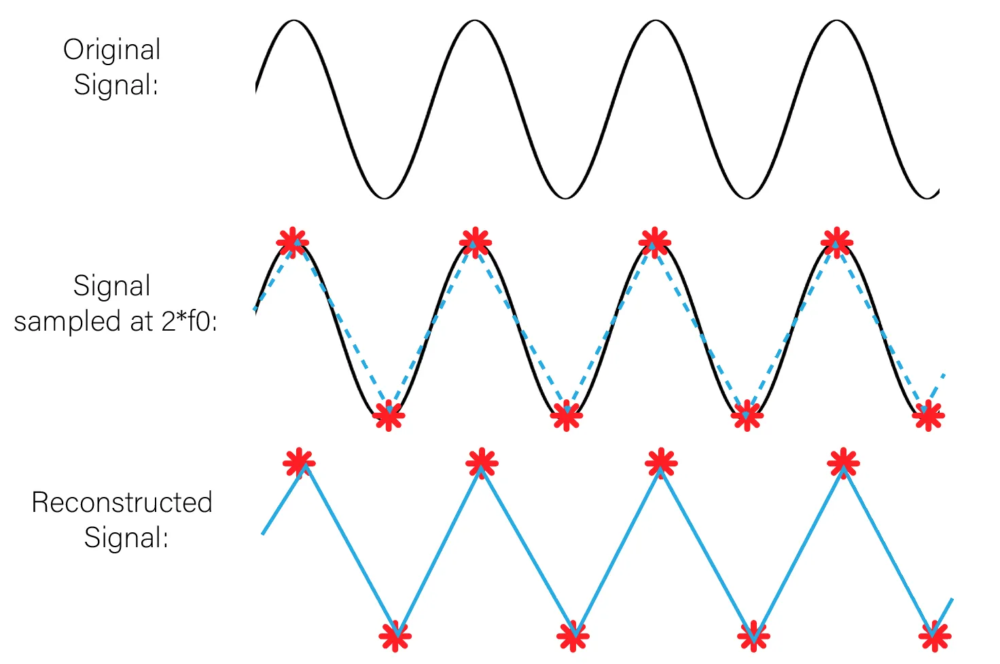

Conceptes generals de microcontroladors
El diferents microcontroladors tenen en comú el seguents aspectes
Sortides analogiques tipus PWM
PWM significa modulació de l'ample de banda en angles: Pulse with Modulation i es una forma d'aconseguir una sortida analògica a partir de diverses sortides digitals molt rapides
PWM es representa amb el simbol "~" tal com podem veure a la imatge d'un arduino uno

Els pins amb PWM en l'arduino uno son el següents: 3,5,6,9,10 i 11. que son sortides analogiques de 8 bits. Com diu a les especificacions del fabricant
Mentres, que en el cas del arduino rev4 usa 12 bits. Anomenat pel fabricant com a DAC (DIGITAL ANALOG CONVERTER)
Tenir 8 o 12 bits en un convertidor DAC tipus PWM fa que tinguem 28 o 210 nivells differents de corrent, es a dir 256 nivells diferents o 2048 nivells diferents
Tenir 8 o 12 bits en un convertidor digital analògic o DAC tipus PWM fa que tinguem 28 o 210 nivells diferents de corrent, es a dir 256 nivells diferents o 2048 nivells diferents
Suposem que Arduino Uno Rev3 o Rev4 podem donar 5 volts com a màxim. Quina seria la resolució en milivolts de cada Arduino?
5 volts dividit entre 256 dona 0.01953125 volts = 19.53125 milivolts per arduino Rev3
5 volts dividit entre 2048 dona 0.00244140625 volts = 2.44140625 milivolts per arduino Rev4
Els milivolts anteriors són la resolució que aconseguim. Imaginem que volem regular la intensitat d'un LED amb un Arduino Uno Rev3 aconseguim menys fluid i amb graons més grans, és a dir canvis més bruscs perquè 256 canvis són menys que 2048 volts. A continuació veurem una imatge que representa com combinant moltes senyals digitals ràpidament sembla que generem un senyal analògi i això és la base del PWM.

Quan major és l'amplada del pols vol dir que major és el temps que la sortida digital està en voltatge alt, per exemple 5V i menys temps està a 0V, i per tant el promig de tots els polsos és més alt. En canvi si per exemple si cada pols és més estret a 5V vol dir que estarà més temps a 0V, i per tant el promig de tots els polsos és més baix. A la imatge de a dalt es pot veure com s'encendria un LED o un motor funcionaria a una velocitat del 10%, 30%, 50%, 90%. Quin persentatge del senyal canviara en un cas i en un altre?
- (0,01953125/5)*100 = 0,390625%
- (0,00244140625/5)*100 = 0,048828125%
A la taula a continuació veuras els valors per defecte de la freqüència PWM en Arduino Uno Rev3
| PIN de Sortida | Freqüència |
|---|---|
| PINS: 3, 9, 10, 11 | 490 Hz |
| PINS: 5 i 6 | 976 Hz |
Nota: La taula HTML anterior té una capçalera com un document HTML, però és diu thead, en comptes de head i és la primera filera de la taula. Té un cos anomenat tbody, en comptes de body i és la reta de la taula. La taula la defineix el tag table que agrupa thead y tbody. Totes les fileres tant del thead com del tbody es defineixen amb el tag tr, que vol dir table row. Dintre de thead hi ha elements individuals que són cel·les que pertanyen a la primera filera que s'anomenen th o table heading. En el table body hi ha també fileres tr, però dintre d'aquestes fileres els elements individuals han de ser td, que significa table data. per últim, s'han de tancar el table o body. Tots aquests elements es poden modificar amb CSS i fer la taula amb un estil propi
Les freqüencies baixes produeixen sorolls en els motors. Per tant, és preferible connectar motors als pins 5 i 6.
La freqüencia és la inversa del periòde, 976 Hz o cicles per segon correspo a un periòde de 1/976 segons, que són 1,024 milisegons
Convertidor analògic - digital
Apliquem el teorema de Nyquist que diu que hem de fer el doble de mostres com a mínim que la freqüencia màxima per aconseguir convertir un senyal contínu analògic en un senyal digital mostrejat segons la figura següent
Nyquist és important perquè si en el codi poso una freqüencia de mostreig de 20 Hz per un so no fucionarà perque la freqüencia mínima del so és 20 Hz i la màxima 20 KHz pel que refereix al so audible en humans. Això és perque agafes mostres massa grans i no podem veure pujades i baixades de la senyal.
A continuació veurem una taula comparativa sobre els microcontroladors Arduino UNo i ESP32S3 i el circcuit ha ADS1115
| Microcontrolador i o circuit | Número de bits(Nivells) | Voltatge |
|---|---|---|
| Arduino Uno | 10 (0-1023) | 0-5V, 0-3.3V |
| ESP32S3 | 12 (0-4095) | 0-3.3V |
| ADS1115 | 16 (0-65536) | 0-3.3V |
int valorADC= 0;
void setup(){
Serial.begin(9600);//9600 en Arduino o 115200 en S3
}
void loop(){
valor ADC = analog.Read(A0);//34 en S3
Serial println(valorADC);//0-1023 o 0-4095
delay(500);}